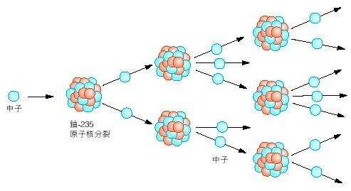
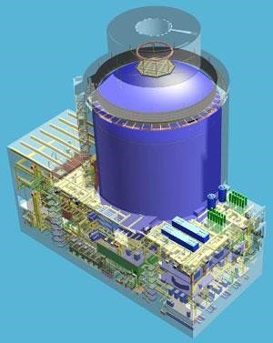

中核集团
2017年核科普开放周活动之第二届全国高校学生课外“核+X”创意大赛
核+动力
主页
概况
核能
核动力
核反应堆
概况
压水堆
基本构成——核能生成系统
主冷却剂系统——内能转换系统
二回路系统——动能输出系统
安全壳
核电站
概况
中国核电站
潜艇核动力装置
概况
中国核潜艇
水面船舰核动力装置
概况
中国核动力航母
空间核能装置
概况
空间核电源
空间核推进装置
发展和研究前景
中、小型核动力发展情况介绍
中、小核动力未来研究的方向
结论
核反应堆
中子人射至核反应堆内，与一个铀核发生核反应，经过复杂的内部过程，最终铀核裂变为两个碎片，同时放出几个中子。核反应发生前粒子的总质量要大于核反应发生后粒子的总质量，根据爱因斯坦著名的质能公式E=mc²，所亏损的质量全部转化为能量，绝大部分以热量的形式释放，少部分以辐射的形式逃逸，不要小看这一点点的质量亏损，与光速的平方相乘后将是一个巨大的能量数值。如果每次裂变反应产生中子的数目大于引起核裂变所消耗中子的数目，那么在少数的原子核中引起了核裂变反应以后，就有可能不依靠外界的作用而使裂变反应不断地进行下去。这样的裂变反应称作自续的链式裂变反应，实现自续链式裂变反应的条件是：当一个裂变核俘获一个中子产生裂变以后，新产生的中子中，平均至少应该再有一个中子去引起另外一个核的裂变。链式反应产生大量热能。用循环水(或其他物质)带走热量才能避免反应堆因过热烧毁。导出的热量可以使水变成水蒸气，推动汽轮机发电。
 
西南科技大学
石晓钟 陈怡志 张鸿德
指导教师 段涛
指导教师 段涛